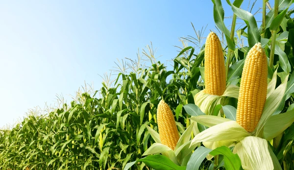
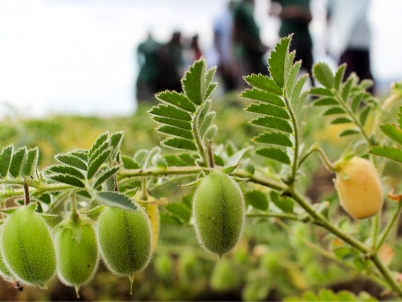

1. RICE / 1. चावल


Rice in Jharkhand is predominantly grown during the Kharif season, benefiting from the region's monsoon
rainfall. The state primarily supplies its rice to neighboring Bihar and West Bengal, dominating the
market share in these states. Rice cultivation thrives in well-drained, fertile soils, particularly
loamy or clayey soils. Cultivation demands moderate time and resources, including labor for planting,
irrigation, and harvesting. Demand for Jharkhand's rice is notably high in states like Bihar, West
Bengal, Odisha, and Uttar Pradesh, owing to its quality and regional preferences, contributing
significantly to the state's agricultural economy.
झारखंड में चावल मुख्य रूप से ख़रीफ़ सीज़न के दौरान उगाया जाता है, जिससे क्षेत्र की मानसूनी वर्षा से लाभ
होता है। राज्य मुख्य रूप से पड़ोसी बिहार और पश्चिम बंगाल को अपने चावल की आपूर्ति करता है, इन राज्यों में
बाजार हिस्सेदारी पर हावी है। चावल की खेती अच्छी जल निकासी वाली, उपजाऊ मिट्टी, विशेष रूप से दोमट या चिकनी
मिट्टी में पनपती है। खेती के लिए मध्यम समय और संसाधनों की आवश्यकता होती है, जिसमें रोपण, सिंचाई और कटाई
के लिए श्रम भी शामिल है। झारखंड के चावल की मांग बिहार, पश्चिम बंगाल, ओडिशा और उत्तर प्रदेश जैसे राज्यों
में काफी अधिक है, इसकी गुणवत्ता और क्षेत्रीय प्राथमिकताओं के कारण, यह राज्य की कृषि अर्थव्यवस्था में
महत्वपूर्ण योगदान देता है।
2. MAIZE / 2. मक्का


Maize cultivation in Jharkhand occurs mainly during the Kharif season, leveraging the ample monsoon
rainfall. The state predominantly supplies maize to local markets and neighboring states like Bihar and
West Bengal, where it holds a substantial market share. Maize thrives in well-drained soils with good
organic content, favoring loamy or sandy loam soils. Cultivation requires moderate time and resources,
including land preparation, seed sowing, and pest management. Demand for Jharkhand's maize is high in
neighboring states and local markets due to its quality and versatility in various food and industrial
applications, bolstering the state's agricultural economy.
झारखंड में मक्के की खेती मुख्य रूप से खरीफ मौसम के दौरान होती है, जिससे पर्याप्त मानसूनी वर्षा होती है।
राज्य मुख्य रूप से स्थानीय बाजारों और बिहार और पश्चिम बंगाल जैसे पड़ोसी राज्यों में मक्के की आपूर्ति
करता है, जहां इसकी बाजार में अच्छी खासी हिस्सेदारी है। मक्का अच्छी कार्बनिक सामग्री वाली अच्छी जल निकासी
वाली मिट्टी में पनपती है, जो दोमट या रेतीली दोमट मिट्टी के लिए अनुकूल होती है। खेती के लिए मध्यम समय और
संसाधनों की आवश्यकता होती है, जिसमें भूमि की तैयारी, बीज बोना और कीट प्रबंधन शामिल है। झारखंड के मक्के
की गुणवत्ता और विभिन्न खाद्य और औद्योगिक अनुप्रयोगों में बहुमुखी प्रतिभा के कारण पड़ोसी राज्यों और
स्थानीय बाजारों में इसकी मांग अधिक है, जिससे राज्य की कृषि अर्थव्यवस्था को मजबूती मिलती है।
3. WHEAT / 3. जूट

Wheat cultivation in Jharkhand primarily occurs during the Rabi season, taking advantage of the cooler
climate and sufficient irrigation facilities. While Jharkhand's wheat production is substantial, it
often caters to local consumption within the state itself. The market share for Jharkhand's wheat
extends mainly to neighboring states like Bihar and West Bengal. Wheat thrives in well-drained loamy
soils with good moisture retention capabilities. Cultivation demands moderate time and resources,
including land preparation, seed sowing, irrigation, and pest control. Demand for Jharkhand's wheat is
relatively high in neighboring states, contributing to the state's agricultural sector and food
security.
ठंडी जलवायु और पर्याप्त सिंचाई सुविधाओं का लाभ उठाते हुए, झारखंड में गेहूं की खेती मुख्य रूप से रबी मौसम
के दौरान की जाती है। जबकि झारखंड का गेहूं उत्पादन पर्याप्त है, यह अक्सर राज्य के भीतर ही स्थानीय खपत को
पूरा करता है। झारखंड के गेहूं की बाजार हिस्सेदारी मुख्य रूप से बिहार और पश्चिम बंगाल जैसे पड़ोसी राज्यों
तक फैली हुई है। गेहूं अच्छी जल निकास वाली दोमट मिट्टी में अच्छी नमी बनाए रखने की क्षमता के साथ पनपता है।
खेती के लिए मध्यम समय और संसाधनों की आवश्यकता होती है, जिसमें भूमि की तैयारी, बीज बोना, सिंचाई और कीट
नियंत्रण शामिल है। झारखंड के गेहूं की मांग पड़ोसी राज्यों में अपेक्षाकृत अधिक है, जो राज्य के कृषि
क्षेत्र और खाद्य सुरक्षा में योगदान देता है।
4. LENTILS / 4. मसूर

Lentil cultivation in Jharkhand predominantly occurs during the Rabi season, benefiting from the cooler
climate and adequate irrigation facilities. While Jharkhand's lentil production is significant, it
primarily serves local consumption within the state. The market share for Jharkhand's lentils extends
mainly to neighboring states like Bihar, West Bengal, and Odisha, where there's a high demand for
pulses. Lentils thrive in well-drained loamy soils with good organic matter content. Cultivation demands
moderate time and resources, including land preparation, seed sowing, irrigation, and pest management.
Demand for Jharkhand's lentils is consistently high in neighboring states, contributing to the state's
agricultural economy and food security efforts.
झारखंड में मसूर की खेती मुख्य रूप से रबी मौसम के दौरान होती है, जिससे ठंडी जलवायु और पर्याप्त सिंचाई
सुविधाओं का लाभ मिलता है। जबकि झारखंड का मसूर उत्पादन महत्वपूर्ण है, यह मुख्य रूप से राज्य के भीतर
स्थानीय खपत को पूरा करता है। झारखंड की दाल की बाजार हिस्सेदारी मुख्य रूप से बिहार, पश्चिम बंगाल और ओडिशा
जैसे पड़ोसी राज्यों तक फैली हुई है, जहां दालों की उच्च मांग है। मसूर की फसल अच्छे जल निकास वाली दोमट
मिट्टी में अच्छी कार्बनिक पदार्थ सामग्री के साथ उगती है। खेती के लिए मध्यम समय और संसाधनों की आवश्यकता
होती है, जिसमें भूमि की तैयारी, बीज बोना, सिंचाई और कीट प्रबंधन शामिल है। झारखंड की दाल की मांग पड़ोसी
राज्यों में लगातार अधिक है, जो राज्य की कृषि अर्थव्यवस्था और खाद्य सुरक्षा प्रयासों में योगदान दे रही
है।
5. CHICKPEAS / 5. चने


Chickpea cultivation in Jharkhand primarily takes place during the Rabi season, leveraging the cooler
temperatures and sufficient irrigation facilities. While Jharkhand's chickpea production is notable, it
mainly caters to local consumption within the state itself. The market share for Jharkhand's chickpeas
extends mainly to neighboring states like Bihar, West Bengal, and Odisha, where there's a high demand
for pulses. Chickpeas thrive in well-drained loamy soils with good fertility levels. Cultivation
requires moderate time and resources, including land preparation, seed sowing, irrigation, and pest
management. Demand for Jharkhand's chickpeas remains consistently high in neighboring states,
contributing to the state's agricultural sector and food security.
झारखंड में चने की खेती मुख्य रूप से रबी मौसम के दौरान होती है, जिसमें ठंडे तापमान और पर्याप्त सिंचाई
सुविधाओं का लाभ उठाया जाता है। जबकि झारखंड का चना उत्पादन उल्लेखनीय है, यह मुख्य रूप से राज्य के भीतर ही
स्थानीय खपत को पूरा करता है। झारखंड के चने की बाजार हिस्सेदारी मुख्य रूप से बिहार, पश्चिम बंगाल और ओडिशा
जैसे पड़ोसी राज्यों तक फैली हुई है, जहां दालों की उच्च मांग है। चना अच्छे जल निकास वाली दोमट मिट्टी में
अच्छी उर्वरता स्तर के साथ पनपता है। खेती के लिए मध्यम समय और संसाधनों की आवश्यकता होती है, जिसमें भूमि
की तैयारी, बीज बोना, सिंचाई और कीट प्रबंधन शामिल है। पड़ोसी राज्यों में झारखंड के चने की मांग लगातार
ऊंची बनी हुई है, जो राज्य के कृषि क्षेत्र और खाद्य सुरक्षा में योगदान दे रही है।
6. SUGARCANE / 6. गन्ना


Sugarcane in Assam is primarily grown during the pre-monsoon and monsoon seasons, from October to March,
with harvesting typically taking place from January to May.
Assam contributes to India's sugarcane production, and its sugarcane is used for both local consumption
and sugar production, with a share in the national market. However, states like Uttar Pradesh,
Maharashtra, and Karnataka are major players in India's sugarcane cultivation and sugar production.
Sugarcane thrives in well-drained, fertile soils, and Assam's riverine plains provide suitable
conditions for cultivation.
Sugarcane cultivation requires substantial resources, including land preparation, planting, irrigation,
and harvesting. The crop has a growth cycle of about 10 to 12 months.
The demand for sugarcane is high in states with a well-established sugar industry, such as Uttar
Pradesh, Maharashtra, and Karnataka.
झारखंड में गन्ना मुख्य रूप से प्री-मॉनसून और मॉनसून सीज़न के दौरान अक्टूबर से मार्च तक उगाया जाता है,
जिसकी
कटाई आमतौर पर जनवरी से मई तक होती है।
असम भारत के गन्ना उत्पादन में योगदान देता है, और इसके गन्ने का उपयोग राष्ट्रीय बाजार में हिस्सेदारी के
साथ स्थानीय खपत और चीनी उत्पादन दोनों के लिए किया जाता है। हालाँकि, उत्तर प्रदेश, महाराष्ट्र और कर्नाटक
जैसे राज्य भारत की गन्ने की खेती और चीनी उत्पादन में प्रमुख खिलाड़ी हैं।
गन्ना अच्छी तरह से सूखा, उपजाऊ मिट्टी में उगता है, और असम के नदी के मैदान खेती के लिए उपयुक्त
परिस्थितियाँ प्रदान करते हैं।
गन्ने की खेती के लिए भूमि की तैयारी, रोपण, सिंचाई और कटाई सहित पर्याप्त संसाधनों की आवश्यकता होती है।
फसल का विकास चक्र लगभग 10 से 12 महीने का होता है।
उत्तर प्रदेश, महाराष्ट्र और कर्नाटक जैसे अच्छी तरह से स्थापित चीनी उद्योग वाले राज्यों में गन्ने की मांग
अधिक है।
7. JUTE / 7. जूट

Jute cultivation in Jharkhand primarily occurs during the Kharif season, capitalizing on the region's
favorable monsoon conditions. Jharkhand's jute production, although significant, is primarily utilized
for local consumption and small-scale industries within the state. The market share for Jharkhand's jute
extends mainly to neighboring states like West Bengal and Bihar, where jute-based industries are more
prevalent. Jute thrives in well-drained, fertile soils, particularly in floodplain areas. Cultivation
demands moderate time and resources, including land preparation, seed sowing, irrigation, and pest
management. Demand for Jharkhand's jute remains stable in neighboring states, supporting the state's
agricultural economy and local industries.
झारखंड में जूट की खेती मुख्य रूप से ख़रीफ़ सीज़न के दौरान होती है, जो क्षेत्र की अनुकूल मानसून स्थितियों
का लाभ उठाती है। झारखंड का जूट उत्पादन, हालांकि महत्वपूर्ण है, मुख्य रूप से राज्य के भीतर स्थानीय खपत और
लघु उद्योगों के लिए उपयोग किया जाता है। झारखंड के जूट का बाजार हिस्सा मुख्य रूप से पश्चिम बंगाल और बिहार
जैसे पड़ोसी राज्यों तक फैला हुआ है, जहां जूट आधारित उद्योग अधिक प्रचलित हैं। जूट अच्छी तरह से सूखा,
उपजाऊ मिट्टी में पनपता है, खासकर बाढ़ वाले क्षेत्रों में। खेती के लिए मध्यम समय और संसाधनों की आवश्यकता
होती है, जिसमें भूमि की तैयारी, बीज बोना, सिंचाई और कीट प्रबंधन शामिल है। झारखंड के जूट की मांग पड़ोसी
राज्यों में स्थिर बनी हुई है, जिससे राज्य की कृषि अर्थव्यवस्था और स्थानीय उद्योगों को मदद मिल रही है।
8. TEA / 8. चाय


Tea cultivation in Jharkhand is primarily undertaken in the eastern regions bordering West Bengal,
benefiting from the suitable climate and soil conditions. Tea plants are typically cultivated throughout
the year, with the majority of the production happening during the drier months. Jharkhand's tea
production, though modest compared to major tea-producing states, caters to local consumption and niche
markets. The market share for Jharkhand's tea extends mainly to neighboring states like Bihar, West
Bengal, and Odisha. Tea plants thrive in well-drained, acidic soils with ample rainfall and cool
temperatures. Cultivation demands significant time and resources, including land preparation, planting,
irrigation, pest control, and labor for harvesting. Demand for Jharkhand's tea is relatively high in
neighboring states, contributing to the state's agricultural diversity and economy.
झारखंड में चाय की खेती मुख्य रूप से पश्चिम बंगाल की सीमा से लगे पूर्वी क्षेत्रों में की जाती है, जो
उपयुक्त जलवायु और मिट्टी की स्थिति से लाभान्वित होती है। चाय के पौधों की खेती आम तौर पर पूरे वर्ष की
जाती है, जिनमें से अधिकांश उत्पादन सूखे महीनों के दौरान होता है। झारखंड का चाय उत्पादन, हालांकि प्रमुख
चाय उत्पादक राज्यों की तुलना में मामूली है, स्थानीय खपत और विशिष्ट बाजारों को पूरा करता है। झारखंड की
चाय का बाजार हिस्सा मुख्य रूप से बिहार, पश्चिम बंगाल और ओडिशा जैसे पड़ोसी राज्यों तक फैला हुआ है। चाय के
पौधे पर्याप्त वर्षा और ठंडे तापमान वाली अच्छी जल निकासी वाली, अम्लीय मिट्टी में पनपते हैं। खेती के लिए
महत्वपूर्ण समय और संसाधनों की आवश्यकता होती है, जिसमें भूमि की तैयारी, रोपण, सिंचाई, कीट नियंत्रण और
कटाई के लिए श्रम शामिल है। झारखंड की चाय की मांग पड़ोसी राज्यों में अपेक्षाकृत अधिक है, जो राज्य की कृषि
विविधता और अर्थव्यवस्था में योगदान करती है।